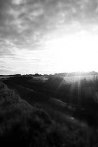

<!-- boyutunu manuel olrak da ayarlayabiliriz -->

<!--
    Src  fotoğrafın kaynağıdır ya link ya da projeye eklediğimiz dosya yolu  
    Alt yazan yer görüntü yüklenemezse, arama motorları ve görme engelliler için işe yarar.
     Resim yüklendiği sürece gözükmez
-->


<!-- ../  bir üst dizine taşıyor dosya yolunu,  
    resim klasörü dosya yazıldığı dosya ile aynı klasör içindeyse direkt klasör adı yazabiliriz 
    birden fazla üst dizine çıkmak istiyorsak istediğimiz kadar ../../../images şeklined kullanabiliriz
-->

<!--  enlemesine tüm ekranı kaplıyor -->


<!-- görsel üstüne gelince not çıkarma -->


<!-- 20 piksel çerçece ekliyor -->


